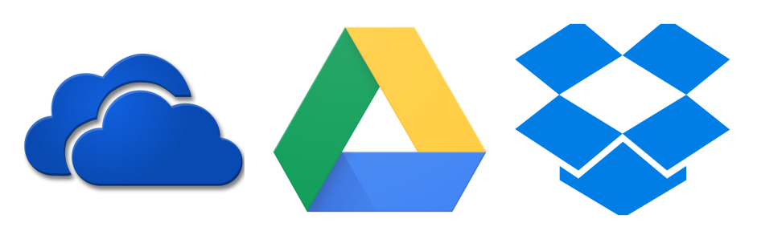
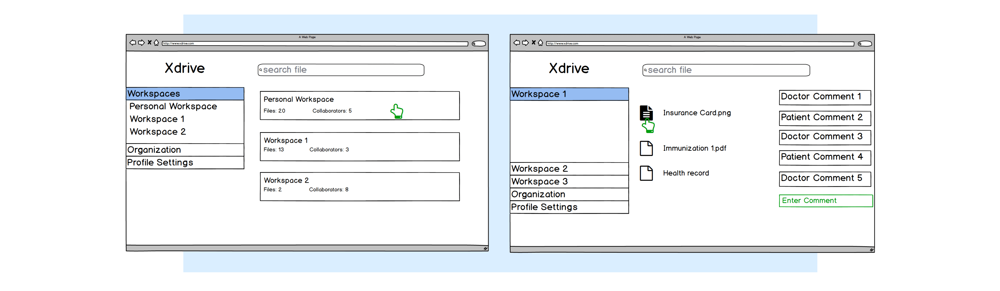
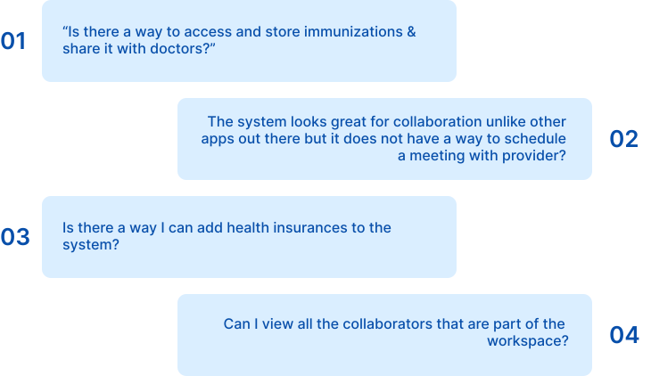
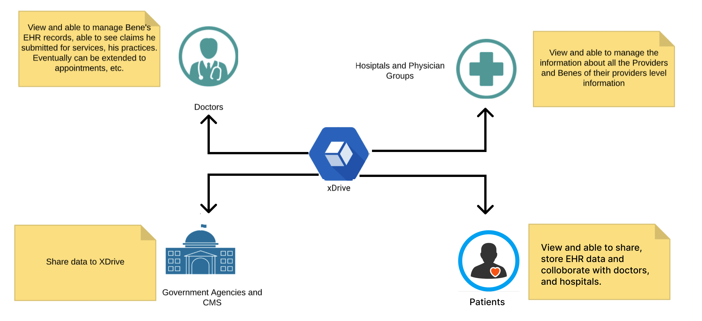
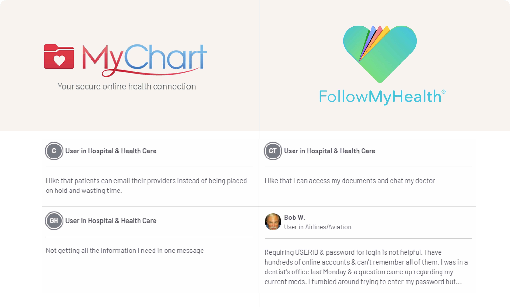
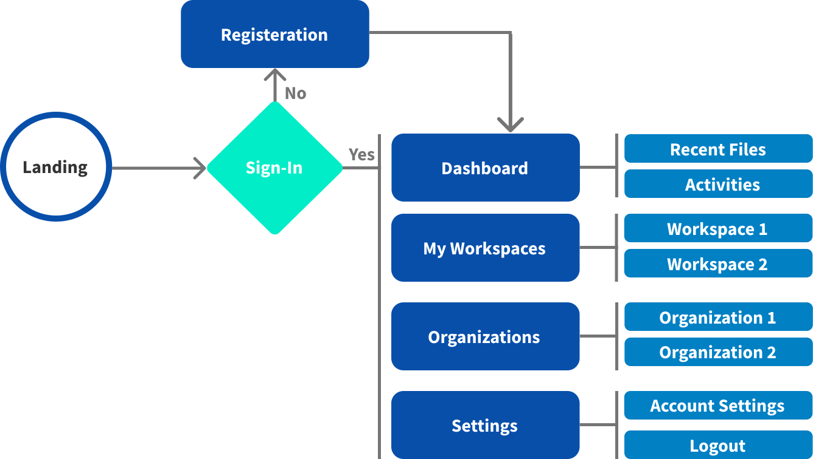
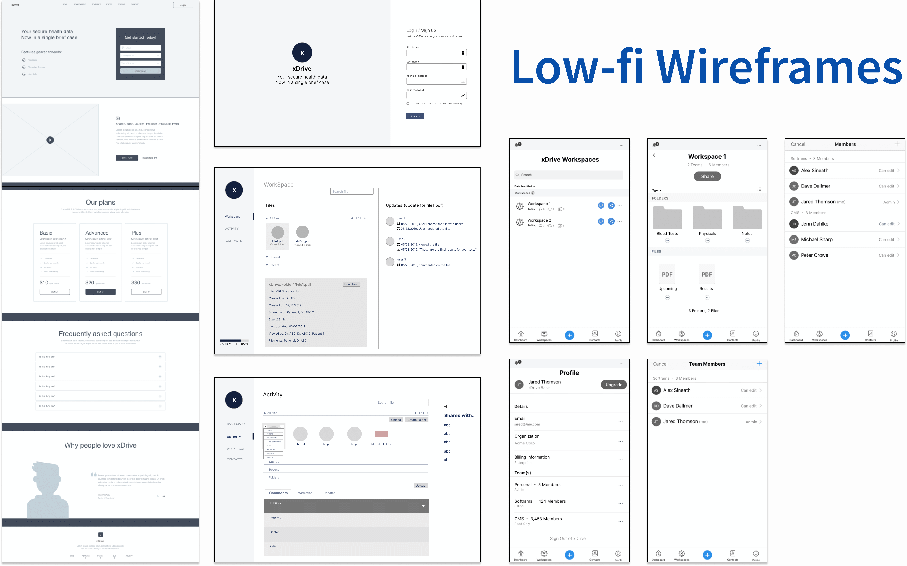
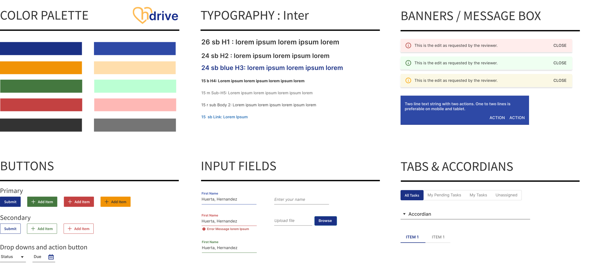
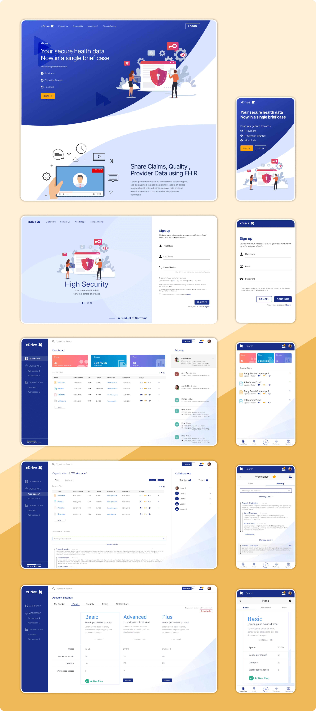

Secondary Research — Competitive & SWOT Analysis
I reviewed three products — Dropbox, Google Drive, and Windows OneDrive — surveying customer reviews to understand how HDrive could solve the problem better. I created a SWOT analysis to understand their strengths, weaknesses, and opportunities.

Competitive & SWOT analysis — click to expand
Primary Research — End User Interviews & Feedback
With a proof of concept, I created a basic wireframe in Balsamiq and interviewed 4 patients to validate the idea — gathering early feedback before any high-fidelity work began.

Initial wireframes & interview setup — click to expand
We received valuable feedback from the initial wireframe sessions:

Initial user feedback insights — click to expand
User Types & Personas
Based on initial research, I analyzed the user groups and their roles in the system. I created personas to define user demographics and use them as a reference throughout the design process.

Beta user personas — click to expand
Research Findings & Feature Ideation
With research findings, I conducted a competitive analysis between MyChart and FollowMyHealth — as suggested by users. This gave a clear vision: HDrive's value proposition was the storing, sharing, and collaboration aspects in a workspace, with other features supporting that main goal.

Opportunity mapping — click to expand
MVP for Beta Phase

Beta MVP structure — click to expand
Rapid Prototyping
I led rapid prototyping sessions — sketching out low-fidelity flows with the Product Manager, Lead BA, and CTO over video calls, since several team members worked remotely. This helped communicate ideas effectively and efficiently across the distributed team. I led the design sessions and brainstormed MVP features into low-fi designs with the team.

Beta low-fidelity wireframes — click to expand
Style Guide
After the first draft was validated, I created the style guide using Google Material Design principles — used as the foundation for all final hi-fidelity deliverables.

Design system & style guide — click to expand
Final Deliverables — Beta
High-fidelity prototypes designed in Sketch/InVision, incorporating usability test feedback and the complete style guide.

Beta hi-fidelity designs — click to expand